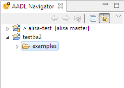

Simulink importer
The functional importers create AADL models skeletons using
a functional model such as Simulink. Simulink
provides a language to describe a functional description
using a graphical notation. However, these models do not show
many deployment information, which may result in limited
analysis.
Such models are often used to simulate and prototype the
system before architecture design efforts. For that purpose,
import these functional models can help to make the initial
models by automatically generating a model skeleton
from existing prototyping efforts. The model skeleton
can then be refine according to the design specification.
Using the plug-in
In both case, before selecting the menu, you have
to select an empty directory in
your OSATE installation (see picture below).
This directory will then contain
the generated AADL model. Then, the tool
will ask to select the Simulink model to import.

Importing Simulink Models
To import a Simulink model, make sure you
have selected an empty directory in your workspace
and then, select the menu entry
Import Simulink model
under the Analyses menu.
This is shown in the figure below in the
purple box. Please note that the importer
support only Simulink models saved
under the slx format.
Mapping Rules
The following sections provide an overview
of the mapping rules to transform a Simulink
model into an AADL model
For both importers, the tool will create
the following files:
- functional/-functional.aadl contains a functional view using abstract components.
- functional/-runtime.aadl contains the system structure (with subcomponents)
using system components.
- functional/runtime_generic.aadl contains generic components used by all mapped components.
Simulink Mapping Rules
- Each component in the diagram is mapped into an AADL system component
- Simulink component connections is mapped using AADL event data port connections
-
AADL event data port connections are using a generic type.
The plugin also tries to see if the data is a boolean type. Otherwise,
it is mapped into a generic type.
-
In the runtime.aadl model, all systems are bound to
the same processor.
- State flow diagrams are translated into AADL behavior state machine
-
Inner state machines are embedded
-
Data shared across state machines are mapped using an
AADL shared data component.
-
The type of shared data is inferred from the Simulink model.
When possible, it tries to detect the use of boolean types.
Otherwise, it is mapped to a generic type.
-
When a Simulink model references a components from another file, it
does not resolve the reference. Instead, the user then needs to import
the referenced Simulink library as well.
Common Problems
- I cannot select the importer function:
make sure you selected an empty directory in the file hierarchy.
- Nothing happens after selecting my Simulink model:
make sure you selected a slx file format (not the older mdl format).
- Only three files are generated, nothing is created:
make sure you left the root system name empty.
Bug report
If you have any question or would like to report a bug,
please do it on the
OSATE plug-in issue tracker on github.
You can also ask questions
on the AADL mailing-lists.